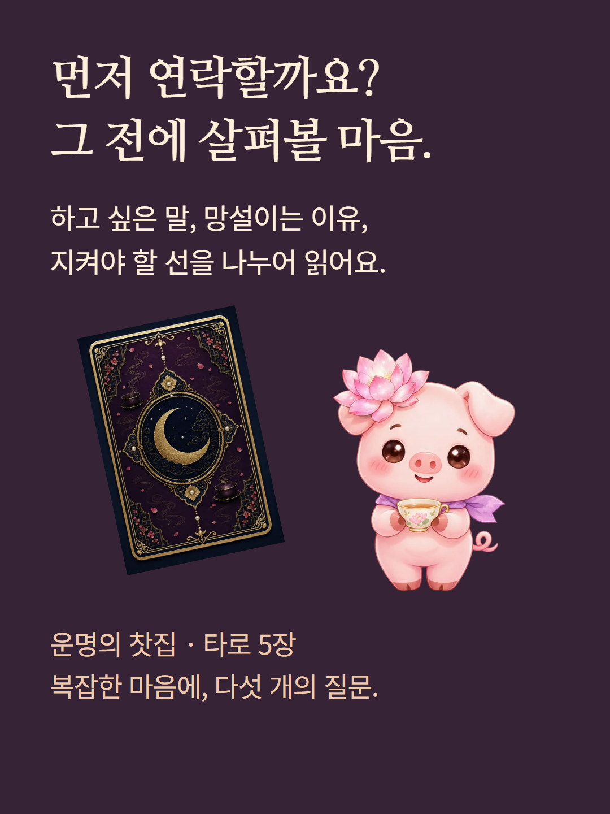
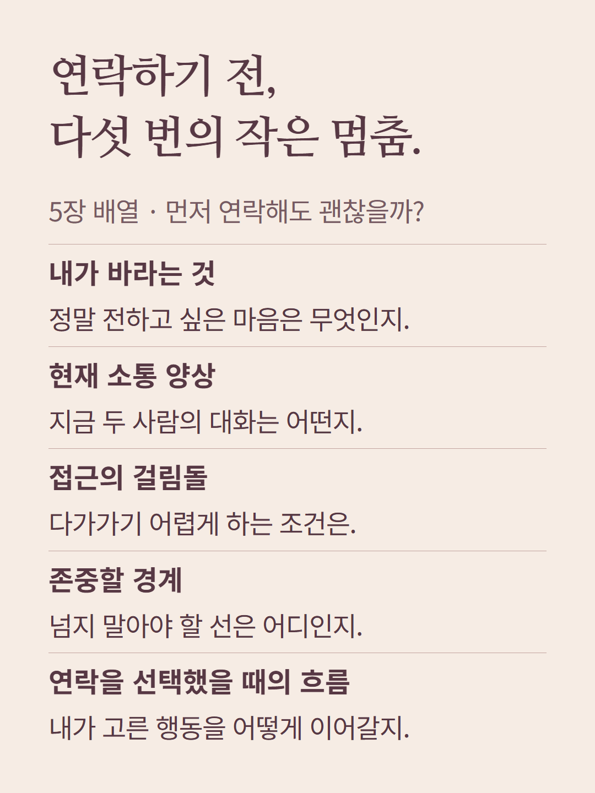
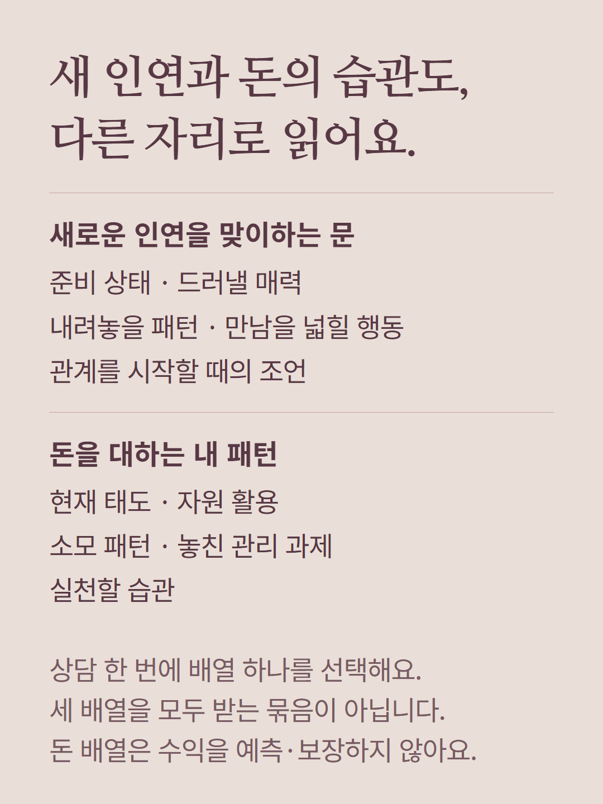
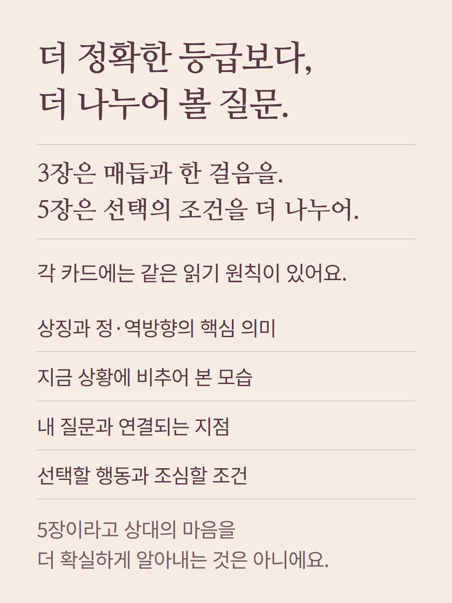
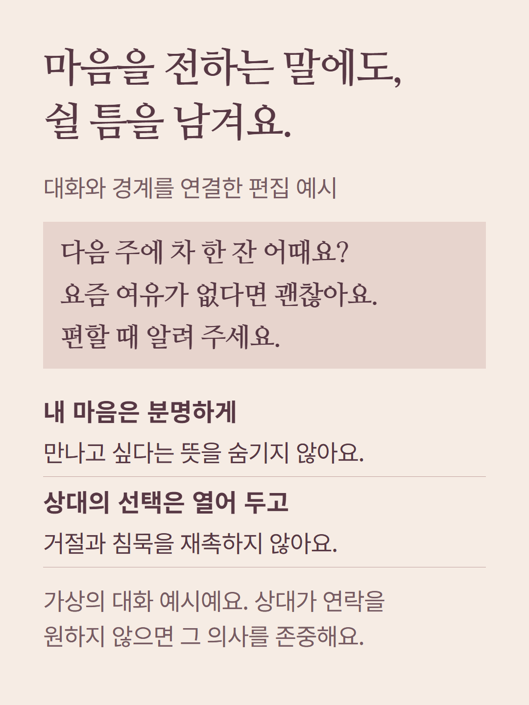
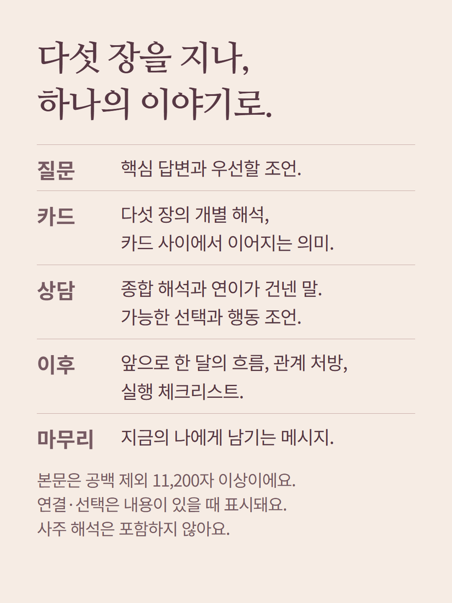
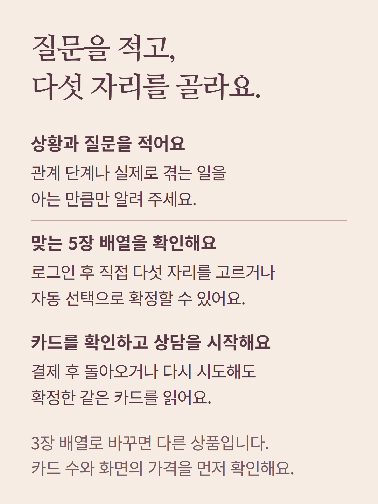
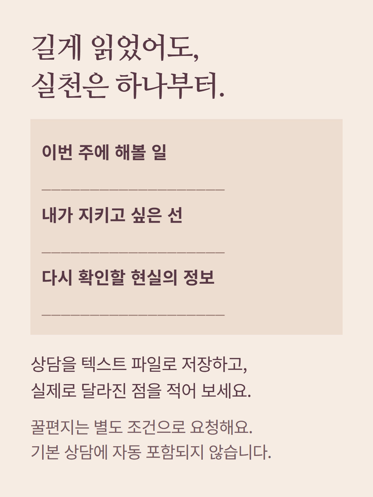
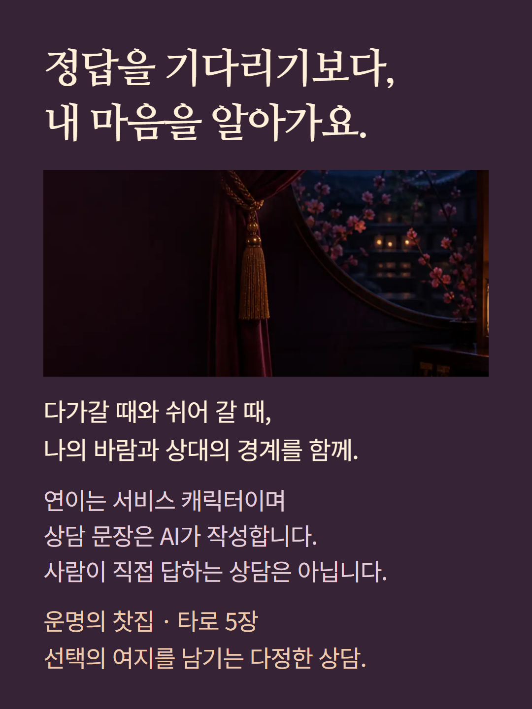

찻집의 5장 배열과 상담 구성을 안내합니다. 자리 도식과 대화는 편집 예시이며 실제 뽑힌 카드나 고객 결과가 아닙니다. 선택한 배열에 따라 다루는 자리가 달라지고, 카드 사이 연결·선택 시나리오·행동 항목은 받은 내용이 있을 때 표시됩니다. 카드 수는 정확도 등급이 아닙니다. 사주·궁합은 별도 선택 상품이며, 추가 꿀편지에는 별도 조건이 있습니다. 연이는 서비스 캐릭터이고 결과 문장은 AI가 작성합니다.